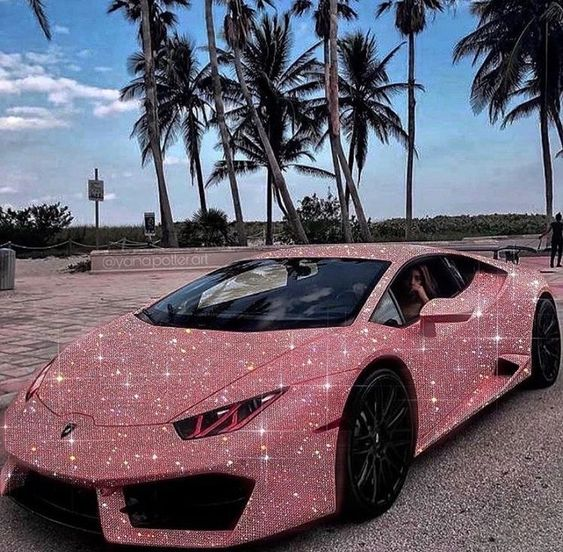

FERRARI

Ferrari es un fabricante de automóviles superdeportivos con sede en Maranello, provincia de Módena, en la región de Emilia-Romaña, Italia. Esta compañía es el resultante de la idea de su fundador Enzo Ferrari de crear una marca de automóviles de turismo con prestaciones lujosas y deportivas, basándose en los éxitos obtenidos a partir de la creación de su Scuderia Ferrari de automovilismo en 1929.
|
FUNDADORES
|
Enzo Ferrari
|
|
Fundacion
|
1947
|
|
EMPLEADOS
|
4571
|
|
Presidente
|
John Elkann
|
MÁS SOBRE FERRARI
Mejores Lanzamientos
- Ferrari Enzo (2002)
- Ferrari LaFerrari(2013)
- Ferrari F40(1987)
- Ferrari Testarossa(1984)
- Ferrari 288 GTO(1984)
